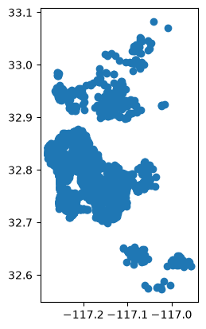

Créditos: El contenido de este cuaderno ha sido tomado de varias fuentes, pero especialmente de Dani Arribas-Bel - University of Liverpool & Sergio Rey - Center for Geospatial Sciences, University of California, Riverside. El compilador se disculpa por cualquier omisión involuntaria y estaría encantado de agregar un reconocimiento.
Modelos de regresión para dependencia espacial tipo SAR#
La heterogeneidad espacial se trata de efectos de fenómenos que están explícitamente vinculados a la geografía y que, por lo tanto, causan variación espacial y agrupamiento. Esto abarca muchos de los tipos de efectos espaciales en los que podemos estar interesados cuando ajustamos regresiones lineales. Sin embargo, en otros casos, nuestro enfoque está en el efecto de la configuración espacial de las observaciones, y en qué medida eso afecta al resultado que estamos considerando. Por ejemplo, podríamos pensar que el precio de una casa no solo depende de si es un adosado o un apartamento, sino también de si está rodeada de muchos más adosados que rascacielos con más apartamentos. Esto, podríamos hipotetizar, podría estar relacionado con la diferente “apariencia” que tiene un vecindario con edificios históricos de baja altura en comparación con uno con rascacielos modernos. En la medida en que estas dos configuraciones espaciales diferentes entren de manera diferente en el proceso de determinación del precio de la casa, estaremos interesados en capturar no solo las características de una casa, sino también de las que la rodean. Este tipo de efecto espacial es fundamentalmente diferente de la heterogeneidad espacial en que no está relacionado con características inherentes de la geografía sino que se relaciona con las características de las observaciones en nuestro conjunto de datos y, especialmente, con su disposición espacial. Llamamos a este fenómeno por el cual los valores de las observaciones están relacionados entre sí a través de la distancia dependencia espacial.
Para incorporar la dependencia espacial en los modelos, se puede utilizar los llamados Modelos Autoregresivos Simultáneos (Whittle 1954), los cuales permiten modelar la dependencia espacial a través de la inclusión de una matriz de vecindad. Esta matriz define la estructura de los vecinos de cada unidad de mapeo, ya sea en función de la distancia entre unidades o a partir de relaciones de contigüidad (Anselin 1996, Elhorst 2014).
Los modelos SAR son ampliamente utilizados en econometría y geografía, así como en otros campos que requieren un análisis espacial riguroso, como la epidemiología y la planificación urbana (Elhorst 2022, Rey et al. 2023, Jaya 2021, ver Hoef et al.2018). Sin embargo, la aplicación de algunos de estos modelos requiere de técnicas especiales, ya que la estructura de dependencia espacial puede introducir complicaciones que no están presentes en los modelos estadísticos clásicos (Anselin 1990).
Los modelos de autoregresión espacial son un tipo de modelo estadístico utilizado para capturar y modelar la dependencia espacial entre unidades de análisis geográficas (Whittle 1954, Getis 2009, Stakhovych 2009, Ripley 1988). En lugar de asumir que las observaciones son independientes entre sí, estos modelos reconocen que las unidades cercanas en el espacio tienden a presentar valores similares (Anselin 1988`).
Estos modelos son ampliamente utilizados en análisis espaciales debido a su capacidad para incluir explícitamente la estructura de dependencia entre las unidades vecinas a través de matrices de vecindad (Lesage 2011, Kelejian 2007). Esta matriz introduce el componente espacial, permitiendo que el valor de la variable respuesta en cada unidad de análisis se vea influido por los valores de las unidades vecinas. Esto permite modelar explícitamente el efecto que tienen los vecinos en la variable de interés.
Sin embargo, los modelos de autoregresión espacial también presentan algunas limitaciones (Lesage 2011, Anselin 2022). La estimación de los parámetros en los modelos de autoregresión espacial puede ser compleja, especialmente cuando se trabaja con grandes conjuntos de datos y matrices de vecindad densas. Adicionalmente, la definición de la matriz de vecindad es fundamental, y una elección incorrecta puede llevar a resultados sesgados o poco representativos.
La ecuación básica de un modelo de autoregresión simultaneo se puede representar de la siguiente manera (Cliff 1981, Kelejian 2007, Lesage 2009):
donde el término \(\rho\) introduce el componente espacial, permitiendo que el valor de la variable respuesta Y en cada unidad de análisis esté influido por los valores de las unidades vecinas, ponderados por la matriz de vecindad (W). \(\beta\) es el vector de coeficientes de regresión asociados a las variables predictoras (X). Estos coeficientes reflejan la influencia de cada variable en la variable respuesta Y. \(\epsilon\) es el término de error aleatorio distribuido de manera independiente e idéntica con media cero, que recoge la variabilidad no explicada por el modelo.
En los modelos de autoregresión simultaneo (SAR) de forma estricta la dependencia espacial está asociada a la variable respuesta \(Y\), lo que implica una relación simultánea que involucra todas las observaciones. Esto requiere una operación como la inversa de \((1-\rho W)\) para despejar los valores de \(Y\). Sin embargo, la mayoría de los autores amplían este grupo a modelos espaciales con tres tipos de efectos de dependencia: (i) autocorrelación endógena en la variable respuesta (SAR), (ii) autocorrelación exógena en los predictores y (iii) autocorrelación en los términos de error. El modelo espacial general (GNS, por sus siglas en inglés), también conocido como modelo espacial SARAR(1,1) o modelo espacial de Cliff-Ord, abarca estos tres tipos de dependencias de la siguiente forma (Lesage 2009, Kelejian 2007, Cliff 1981):
donde \(\lambda\) es el coeficiente en una estructura autoregresiva espacial para el error \(\mu\). Es decir, que el término \(W_y\) captura los efectos de interacción endógena entre la variable respuesta, \(WX_y\) modela los efectos de interacción exógena entre los predictores; mientras que el término \(W_u\) se ocupa de los efectos de interacción entre los residuales.
De acuerdo como se incluyan o eliminen los términos se pueden obtener diferentes especificaciones (Elhorst2013). La más común es el modelo con Autoregresión Espacial (SAR), donde \(\lambda=0\), y por lo tanto solo incluye la variable dependiente con autoregresión espacial, \(\rho Wy\). En el caso donde \(\rho=0\), el modelo de Error Espacial (SEM) retiene los términos de error \(\lambda W \mu\), mientras que el modelo con Autoregresión Espacial en X (SLX) comprende la autoregresión espacial de los predictores, \(W X y\). Otras variantes corresponden al modelo Combinado Autoregresivo de Kelejan-Prucha (SAC), que incluye autocorrelación en \(\rho W y\) y \(\lambda W \mu\); el modelo de Durbin Espacial (SDM), que combina una variable dependiente autoregresiva \(\rho W y\) y predictores con autoregresión espacial \(W X y\); y el modelo de Error de Durbin Espacial (SDEM), que incluye un término de error espacial \(\lambda W \mu\) combinado con predictores con autoregresión espacial \(W X y\) (Elhorst 2013, Anselin 2022).

Un primer paso esencial en el uso de modelos espaciales es estimar cualquier posible estructura espacial en los datos de entrada o en el residuo de los modelos. Dos pruebas comunes para detectar efectos espaciales son el gráfico de dispersión de Moran (Anselin 1988) y la prueba del Multiplicador de Lagrange (LM) (Anselin 1996). El gráfico de dispersión de Moran ilustra la relación entre cada observación y el promedio de sus vecinos, y ayuda a identificar conglomerados locales y valores atípicos espaciales. El gráfico categoriza las asociaciones espaciales en cuatro tipos: valores altos rodeados de vecinos con valores altos (Q1), valores bajos rodeados de valores bajos (Q3), Bajo-Alto (Q2) y Alto-Bajo (Q3), que indican conglomerados o valores atípicos relativos a la media general. El estadístico \(I\) de Moran es la pendiente de un ajuste lineal al gráfico de dispersión, y mide la dependencia espacial general:
donde \(n\) es el número de observaciones, \(y_i\) es el valor estandarizado de la variable respuesta en la ubicación \(i\). El Índice de Moran (MI) varía de \(-\)1 a \(+\)1, donde cero indica ausencia de autocorrelación espacial, +1 indica una agrupación perfecta de valores similares, y -1 indica dispersión.
La prueba del Multiplicador de Lagrange (LM) se utiliza para decidir sobre un modelo de regresión espacial adecuado y evaluar la autocorrelación espacial tanto en la variable respuesta como en sus residuales (Anselin 1988). La prueba LM compara modelos restringidos (mínimos cuadrados ordinarios sin términos espaciales) con modelos no restringidos (que incluyen términos espaciales). El término espacial puede ser una variable dependiente autoregresiva espacialmente o un término de error autoregresivo espacialmente. El estadístico LM se calcula como la diferencia entre los logaritmos de verosimilitud de los modelos restringido y no restringido, siguiendo una distribución \(\chi^2\) con un grado de libertad bajo la hipótesis nula de no dependencia espacial. Si el estadístico de la prueba excede el valor crítico, se rechaza la hipótesis nula de independencia espacial.
Efectos de autocorrelación exógena entre las variables predictoras#
Volviendo al ejemplo del precio de las casas con el que hemos estado trabajando. Hasta ahora, hemos hipotetizado que el precio de una casa alquilada en San Diego a través de AirBnb puede ser explicado utilizando información sobre sus propias características así como algunas relacionadas con su ubicación, como el vecindario o la distancia al parque principal de la ciudad. Sin embargo, también es razonable pensar que los posibles inquilinos se preocupan por el área más grande alrededor de una casa, no solo por la casa en sí, y estarían dispuestos a pagar más por una casa que esté rodeada de ciertos tipos de casas, y menos si está ubicada en medio de otros tipos. ¿Cómo podríamos probar esta idea?
La forma más directa de introducir dependencia espacial en una regresión es considerando no solo una variable explicativa dada, sino también su rezago espacial. En nuestro caso de ejemplo, además de incluir un indicador para el tipo de casa, también podemos incluir el rezago espacial de cada tipo de casa. Esta adición implica que también estamos incluyendo como factor explicativo del precio de una casa dado la proporción de casas vecinas de cada tipo. Matemáticamente, esto implica estimar el siguiente modelo:
donde \(\sum_{j=1}^N w_{ij}x_{jk}\) representa el rezago espacial de la \(k\)-ésima variable explicativa. Esto se puede expresar en forma matricial utilizando la matriz de pesos espaciales, \(\mathbf{W}\), como:
Esto divide el modelo para enfocarse en dos efectos principales: \(\beta\) y \(\gamma\). El efecto \(\beta\) describe el cambio en \(y_i\) cuando \(X_{ik}\) cambia en uno. Dado que usamos el precio logarítmico para una variable \(y\), nuestros coeficientes \(\beta\) aún se interpretan como elasticidades, lo que significa que un cambio de unidad en la variable \(x_i\) resulta en un cambio porcentual \(\beta\) en el precio \(y_i\). El subíndice para el sitio \(i\) es importante aquí: dado que estamos tratando con una matriz \(\mathbf{W}\), es útil ser claro sobre dónde ocurre el cambio.
De hecho, esto es importante para el efecto \(\gamma\), que representa un efecto indirecto de un cambio en \(X_i\). Esto se puede conceptualizar de dos maneras. Primero, se podría pensar en \(\gamma\) simplemente como el efecto de un cambio de unidad en sus alrededores promedio. Esto es útil y simple. Pero, esta interpretación ignora dónde puede ocurrir este cambio. En realidad, un cambio en una variable en el sitio \(i\) resultará en un derrame a sus alrededores: cuando \(x_i\) cambia, también cambia el rezago espacial de cualquier sitio cerca de \(i\). La precisión de esto dependerá de la estructura de \(\mathbf{W}\), y puede ser diferente para cada sitio. Por ejemplo, piense en un sitio “focal” muy conectado en una matriz de pesos estandarizada por filas. Este sitio focal no se verá muy afectado si un vecino cambia por una unidad, ya que cada sitio solo contribuye en pequeña medida al rezago en el sitio focal. Alternativamente, considere un sitio con solo un vecino: su rezago cambiará exactamente en la cantidad que cambie su único vecino. Por lo tanto, para descubrir el efecto indirecto exacto de un cambio \(y\) causado por el cambio en un sitio específico \(x_i\), debería calcular el cambio en el rezago espacial, y luego usar eso como su cambio en \(X\).
En Python, podemos calcular el rezago espacial de cada variable cuyo nombre comience por pg_ primero creando una lista con todos esos nombres, y luego aplicando lag_spatial de `PyS.
Objetivos de aprendizaje#
Al finalizar este notebook, el estudiante será capaz de:
Ajustar los modelos de la familia SAR (SLX, SEM, SAR-Lag) en Python con
spregy en R conspatialreg.Interpretar el parámetro de dependencia espacial (ρ en SAR-Lag, λ en SEM).
Diferenciar entre los modelos SLX, SEM, SAR-Lag, Mansky, SAC y SDM.
Comparar modelos SAR mediante AIC, pseudo-R² de Nagelkerke y test de razón de verosimilitud.
Aplicar los modelos SAR al caso de estudio de cuencas colombianas.
Requisitos previos: 09_SpatialRegression — conceptos de regresión espacial; conocimiento básico de R y spatialreg.
%matplotlib inline
import spreg
from libpysal import weights
import esda
from scipy import stats
import statsmodels.formula.api as sm
import numpy
import pandas as pd
import geopandas as gpd
import matplotlib.pyplot as plt
import seaborn as sbn
C:\Users\edier\AppData\Roaming\Python\Python314\site-packages\tqdm\auto.py:21: TqdmWarning: IProgress not found. Please update jupyter and ipywidgets. See https://ipywidgets.readthedocs.io/en/stable/user_install.html
from .autonotebook import tqdm as notebook_tqdm
db = gpd.read_file('https://raw.githubusercontent.com/gdsbook/book/main/data/airbnb/regression_db.geojson')
db.info()
<class 'geopandas.geodataframe.GeoDataFrame'>
RangeIndex: 6110 entries, 0 to 6109
Data columns (total 20 columns):
# Column Non-Null Count Dtype
--- ------ -------------- -----
0 accommodates 6110 non-null int32
1 bathrooms 6110 non-null float64
2 bedrooms 6110 non-null float64
3 beds 6110 non-null float64
4 neighborhood 6110 non-null str
5 pool 6110 non-null int32
6 d2balboa 6110 non-null float64
7 coastal 6110 non-null int32
8 price 6110 non-null float64
9 log_price 6110 non-null float64
10 id 6110 non-null int32
11 pg_Apartment 6110 non-null int32
12 pg_Condominium 6110 non-null int32
13 pg_House 6110 non-null int32
14 pg_Other 6110 non-null int32
15 pg_Townhouse 6110 non-null int32
16 rt_Entire_home/apt 6110 non-null int32
17 rt_Private_room 6110 non-null int32
18 rt_Shared_room 6110 non-null int32
19 geometry 6110 non-null geometry
dtypes: float64(6), geometry(1), int32(12), str(1)
memory usage: 668.4 KB
db.plot()
<Axes: >

db.head(2)
| accommodates | bathrooms | bedrooms | beds | neighborhood | pool | d2balboa | coastal | price | log_price | id | pg_Apartment | pg_Condominium | pg_House | pg_Other | pg_Townhouse | rt_Entire_home/apt | rt_Private_room | rt_Shared_room | geometry | |
|---|---|---|---|---|---|---|---|---|---|---|---|---|---|---|---|---|---|---|---|---|
| 0 | 5 | 2.0 | 2.0 | 2.0 | North Hills | 0 | 2.972077 | 0 | 425.0 | 6.052089 | 6 | 0 | 0 | 1 | 0 | 0 | 1 | 0 | 0 | POINT (-117.12971 32.75399) |
| 1 | 6 | 1.0 | 2.0 | 4.0 | Mission Bay | 0 | 11.501385 | 1 | 205.0 | 5.323010 | 5570 | 0 | 1 | 0 | 0 | 0 | 1 | 0 | 0 | POINT (-117.25253 32.78421) |
Estas son las variables explicativas que utilizaremos a lo largo de este ejemplo.
variable_names = ['accommodates', 'bathrooms', 'bedrooms', 'beds', 'rt_Private_room', 'rt_Shared_room', 'pg_Condominium', 'pg_House', 'pg_Other', 'pg_Townhouse']
import requests
from io import BytesIO
url = "http://data.insideairbnb.com/united-states/ca/san-diego/2016-07-07/visualisations/neighbourhoods.geojson"
try:
response = requests.get(url, stream=True)
response.raise_for_status() # Lanza una excepción para errores HTTP
# Lee el contenido descargado como un archivo en memoria
with BytesIO(response.content) as f:
neighborhoods = gpd.read_file(f)
except requests.exceptions.RequestException as e:
print(f"Error al descargar el archivo: {e}")
except Exception as e:
print(f"Error al leer el archivo GPKG: {e}")
Error al descargar el archivo: 403 Client Error: Forbidden for url: http://data.insideairbnb.com/united-states/ca/san-diego/2016-07-07/visualisations/neighbourhoods.geojson
knn = weights.KNN.from_dataframe(db, k=5)
C:\Users\edier\miniconda3\envs\geospatial\Lib\site-packages\libpysal\weights\distance.py:153: UserWarning: The weights matrix is not fully connected:
There are 11 disconnected components.
W.__init__(self, neighbors, id_order=ids, **kwargs)
wx = db.filter(like='pg')\
.apply(lambda y: weights.spatial_lag.lag_spatial(knn, y))\
.rename(columns=lambda c: 'w_'+c).drop('w_pg_Apartment', axis=1)
Una vez calculado, podemos ejecutar el modelo utilizando la estimación de MCO (Mínimos Cuadrados Ordinarios) porque, en este contexto, los rezagos espaciales incluidos no violan ninguna de las suposiciones en las que se basa el MCO (son básicamente variables exógenas adicionales):
slx_exog = db[variable_names].join(wx)
m5 = spreg.OLS(db[['log_price']].values,
slx_exog.values,
name_y='l_price',
name_x=slx_exog.columns.tolist())
print(m5.summary)
REGRESSION RESULTS
------------------
SUMMARY OF OUTPUT: ORDINARY LEAST SQUARES
------------------------------------------------------------------------------------
Data set : unknown
Weights matrix : None
Dependent Variable : l_price Number of Observations: 6110
Mean dependent var : 4.9958 Number of Variables : 15
S.D. dependent var : 0.8072 Degrees of Freedom : 6095
R-squared : 0.6737
Adjusted R-squared : 0.6730
Sum squared residual: 1298.8 F-statistic : 898.9020
Sigma-square : 0.213 Prob(F-statistic) : 0
S.E. of regression : 0.462 Log likelihood : -3939.079
Sigma-square ML : 0.213 Akaike info criterion : 7908.159
S.E of regression ML: 0.4611 Schwarz criterion : 8008.924
------------------------------------------------------------------------------------
Variable Coefficient Std.Error t-Statistic Probability
------------------------------------------------------------------------------------
CONSTANT 4.37635 0.01922 227.67007 0.00000
accommodates 0.08201 0.00505 16.24794 0.00000
bathrooms 0.19212 0.01089 17.63730 0.00000
bedrooms 0.15880 0.01107 14.34277 0.00000
beds -0.04274 0.00689 -6.20479 0.00000
rt_Private_room -0.53882 0.01585 -33.98821 0.00000
rt_Shared_room -1.26951 0.03848 -32.99023 0.00000
pg_Condominium 0.11856 0.02237 5.30007 0.00000
pg_House 0.02427 0.01576 1.53981 0.12366
pg_Other 0.11168 0.02399 4.65529 0.00000
pg_Townhouse -0.03704 0.03431 -1.07947 0.28042
w_pg_Condominium 0.04277 0.00845 5.06014 0.00000
w_pg_House -0.01737 0.00470 -3.69448 0.00022
w_pg_Other 0.04148 0.00799 5.19367 0.00000
w_pg_Townhouse -0.01695 0.01378 -1.22959 0.21890
------------------------------------------------------------------------------------
REGRESSION DIAGNOSTICS
MULTICOLLINEARITY CONDITION NUMBER 13.313
TEST ON NORMALITY OF ERRORS
TEST DF VALUE PROB
Jarque-Bera 2 2611.126 0.0000
DIAGNOSTICS FOR HETEROSKEDASTICITY
RANDOM COEFFICIENTS
TEST DF VALUE PROB
Breusch-Pagan test 14 377.622 0.0000
Koenker-Bassett test 14 159.667 0.0000
================================ END OF REPORT =====================================
La forma de interpretar la tabla de resultados es similar a la de cualquier otra regresión no espacial. Las variables que incluimos en la regresión original muestran un comportamiento similar, aunque con pequeños cambios en tamaño, y también pueden interpretarse de manera similar. El rezago espacial de cada tipo de propiedad (w_pg_XXX) es la nueva adición. Observamos que, excepto en el caso de las casas adosadas (igual que con la variable binaria, pg_Townhouse), todas son significativas, lo que sugiere que nuestra hipótesis inicial sobre el papel de las casas circundantes podría estar funcionando aquí.
Como ilustración, veamos algunos de los efectos directos/indirectos.
El efecto directo de la variable pg_Condominium significa que los condominios suelen ser un 11% más caros (\(\beta_{pg\_Condominium}=0.1063\)) que el tipo de propiedad de referencia, los apartamentos. Más relevante para esta sección, cualquier casa dada rodeada de condominios también recibe un precio premium. Pero, como \(pg_Condominium\) es una variable dummy, el rezago espacial en el sitio \(i\) representa el porcentaje de propiedades cerca de \(i\) que son condominios, que está entre \(0\) y \(1\).
Entonces, un cambio unitario en esta variable significa que aumentaría el porcentaje de condominios en un 100%. Por lo tanto, un aumento de \(0.1\) en w_pg_Condominium (un cambio de diez puntos porcentuales) resultaría en un aumento del 5.92% en el precio de la casa (\(\beta_{w_pg\_Condominium} = 0.6\)).
Se pueden derivar interpretaciones similares para todos los demás variables con rezago espacial para derivar el efecto indirecto de un cambio en el rezago espacial.
Sin embargo, para calcular el cambio indirecto para un sitio dado \(i\), es posible que necesite examinar los valores predichos para \(y_i\). En este ejemplo, dado que estamos utilizando una matriz de pesos estandarizada por filas con veinte vecinos más cercanos, el impacto de cambiar \(x_i\) es el mismo para todos sus vecinos y para cualquier sitio \(i\). Por lo tanto, el efecto siempre es \(\frac{\gamma}{20}\), o aproximadamente \(0.0296\). Sin embargo, esto no sería lo mismo para muchos otros tipos de pesos (como Kernel, Queen, Rook, DistanceBand o Voronoi), por lo que demostraremos cómo construir el efecto indirecto para un \(i\) específico:
Primero, los valores predichos para \(y_i\) se almacenan en el atributo predy de cualquier modelo:
m5.predy
array([[5.43377776],
[5.29098786],
[4.27499095],
...,
[4.22399821],
[4.9131927 ],
[4.8599834 ]], shape=(6110, 1))
Para construir nuevas predicciones, necesitamos seguir la ecuación mencionada anteriormente.
Mostrando este proceso a continuación, primero cambiemos una propiedad para que sea un condominio. Consideremos la tercera observación, que es el primer apartamento en los datos:
db.loc[2]
accommodates 2
bathrooms 1.0
bedrooms 1.0
beds 1.0
neighborhood North Hills
pool 0
d2balboa 2.493893
coastal 0
price 99.0
log_price 4.59512
id 9553
pg_Apartment 1
pg_Condominium 0
pg_House 0
pg_Other 0
pg_Townhouse 0
rt_Entire_home/apt 0
rt_Private_room 1
rt_Shared_room 0
geometry POINT (-117.1412083878189 32.753266324386914)
Name: 2, dtype: object
Este es un apartamento. Hagamos una copia de nuestros datos y cambiemos este apartamento por un condominio:
db_scenario = db.copy()
db_scenario.loc[2, ['pg_Apartment', 'pg_Condominium']] = [0,1] # make Apartment 0 and condo 1
Hemos realizado el cambio con éxito:
db_scenario.loc[2]
accommodates 2
bathrooms 1.0
bedrooms 1.0
beds 1.0
neighborhood North Hills
pool 0
d2balboa 2.493893
coastal 0
price 99.0
log_price 4.59512
id 9553
pg_Apartment 0
pg_Condominium 1
pg_House 0
pg_Other 0
pg_Townhouse 0
rt_Entire_home/apt 0
rt_Private_room 1
rt_Shared_room 0
geometry POINT (-117.1412083878189 32.753266324386914)
Name: 2, dtype: object
Ahora, también necesitamos actualizar las variables de rezago espacial:
wx_scenario = db_scenario.filter(like='pg')\
.apply(lambda y: weights.spatial_lag.lag_spatial(knn, y))\
.rename(columns=lambda c: 'w_'+c).drop('w_pg_Apartment', axis=1)
Y construir una nueva matriz exógena \(\mathbf{X}\), incluyendo una constante 1 como la columna principal
slx_exog_scenario = db_scenario[variable_names].join(wx_scenario)
Ahora, nuestra nueva predicción (en el escenario donde hemos cambiado el sitio 2 de un apartamento a un condominio) es:
y_pred_scenario = m5.betas[0] + slx_exog_scenario @ m5.betas[1:]
Esta predicción será exactamente la misma para todos los sitios, excepto el sitio 2 y sus vecinos. Entonces, los vecinos del sitio 2 son:
knn.neighbors[2]
[np.int64(772), np.int64(2212), np.int64(139), np.int64(4653), np.int64(2786)]
Y el efecto de cambiar el sitio 2 a un condominio se asocia con los siguientes cambios en \(y_i\):
(y_pred_scenario - m5.predy).loc[[2] + knn.neighbors[2]]
| 0 | |
|---|---|
| 2 | 0.118557 |
| 772 | 0.042769 |
| 2212 | 0.042769 |
| 139 | 0.042769 |
| 4653 | 0.042769 |
| 2786 | 0.000000 |
Vemos que la primera fila, que representa el efecto directo, es igual exactamente a la estimación para pg_Condominium. Sin embargo, para los otros efectos, solo hemos cambiado w_pg_Condominium en \(0.05\).
scenario_near_2 = slx_exog_scenario.loc[knn.neighbors[2], ['w_pg_Condominium']]
orig_near_2 = slx_exog.loc[knn.neighbors[2], ['w_pg_Condominium']]
scenario_near_2.join(orig_near_2, lsuffix='_scenario', rsuffix= '_original')
| w_pg_Condominium_scenario | w_pg_Condominium_original | |
|---|---|---|
| 772 | 1.0 | 0.0 |
| 2212 | 2.0 | 1.0 |
| 139 | 1.0 | 0.0 |
| 4653 | 1.0 | 0.0 |
| 2786 | 0.0 | 0.0 |
Introducir un retraso espacial de una variable explicativa, como acabamos de ver, es la forma más sencilla de incorporar la noción de dependencia espacial en un marco de regresión lineal. No requiere cambios adicionales, puede estimarse con OLS y la interpretación es bastante similar a la de interpretar variables no espaciales, siempre que se requieran cambios agregados.
Sin embargo, el campo de la econometría espacial es mucho más amplio y ha producido en las últimas décadas muchas técnicas para tratar los efectos espaciales y la dependencia espacial de diferentes maneras. Aunque esto puede ser una simplificación excesiva, se puede decir que la mayoría de esos esfuerzos para el caso de una sola sección transversal se centran en dos variaciones principales: el modelo de retraso espacial y el modelo de error espacial. Ambos son similares al caso que hemos visto en que se basan en la introducción de un retraso espacial, pero difieren en el componente del modelo que modifican y afectan.
Efectos de autocorrelación endógena con el error espacial#
El modelo de error espacial incluye un retraso espacial en el término de error de la ecuación:
donde \(u_{lag-i} = \sum_j w_{i,j} u_j\).
Aunque parece similar, esta especificación viola las suposiciones sobre el término de error en un modelo OLS clásico. Por lo tanto, se requieren métodos de estimación alternativos. PySAL incorpora funcionalidad para estimar varios de los métodos más avanzados desarrollados por la literatura sobre econometría espacial. Por ejemplo, podemos usar un método general de momentos que tenga en cuenta la heterogeneidad (Arraiz et al., 2010):
m6 = spreg.GM_Error_Het(db[['log_price']].values, db[variable_names].values,
w=knn, name_y='log_price', name_x=variable_names)
print(m6.summary)
GM_Error_Het
REGRESSION RESULTS
------------------
SUMMARY OF OUTPUT: GM SPATIALLY WEIGHTED LEAST SQUARES (HET)
------------------------------------------------------------------------------------
Data set : unknown
Weights matrix : unknown
Dependent Variable : log_price Number of Observations: 6110
Mean dependent var : 4.9958 Number of Variables : 11
S.D. dependent var : 0.8072 Degrees of Freedom : 6099
Pseudo R-squared : 0.6671
N. of iterations : 1 Step1c computed : No
------------------------------------------------------------------------------------
Variable Coefficient Std.Error z-Statistic Probability
------------------------------------------------------------------------------------
CONSTANT 4.41630 0.01875 235.58709 0.00000
accommodates 0.07295 0.00638 11.42818 0.00000
bathrooms 0.16699 0.01564 10.67974 0.00000
bedrooms 0.16806 0.01499 11.21403 0.00000
beds -0.03830 0.00917 -4.17471 0.00003
rt_Private_room -0.51221 0.01650 -31.03640 0.00000
rt_Shared_room -1.15837 0.05107 -22.67995 0.00000
pg_Condominium 0.11266 0.02206 5.10613 0.00000
pg_House 0.02082 0.01465 1.42127 0.15524
pg_Other 0.11050 0.02621 4.21671 0.00002
pg_Townhouse -0.02213 0.02967 -0.74592 0.45571
lambda 0.07257 0.00308 23.54258 0.00000
------------------------------------------------------------------------------------
================================ END OF REPORT =====================================
Efectos de autocorrelación endógena con la variable dependiente#
El modelo de retraso espacial introduce un retraso espacial de la variable dependiente. En el ejemplo que hemos cubierto, esto se traduciría en:
Aunque puede no parecer muy diferente de la ecuación anterior, este modelo viola la suposición de exogeneidad, crucial para que funcione OLS.
En pocas palabras, esto ocurre cuando \(P_i\) existe en ambos “lados” del signo igual.
En teoría, dado que \(P_i\) se incluye en el cálculo de \(P_{lag-i}\), se viola la exogeneidad.
Al igual que en el caso del error espacial, se han propuesto varias técnicas para superar esta limitación y PySAL implementa varias de ellas. En el ejemplo a continuación, utilizamos una estimación de mínimos cuadrados en dos etapas Anselin (1988), donde el retraso espacial de todas las variables explicativas se utiliza como instrumento para el retraso endógeno:
m7 = spreg.GM_Lag(db[['log_price']].values, db[variable_names].values,
w=knn, name_y='log_price', name_x=variable_names)
print(m7.summary)
GM_Lag
REGRESSION RESULTS
------------------
SUMMARY OF OUTPUT: SPATIAL TWO STAGE LEAST SQUARES
------------------------------------------------------------------------------------
Data set : unknown
Weights matrix : unknown
Dependent Variable : log_price Number of Observations: 6110
Mean dependent var : 4.9958 Number of Variables : 12
S.D. dependent var : 0.8072 Degrees of Freedom : 6098
Pseudo R-squared : 0.6980
Spatial Pseudo R-squared: 0.6822
------------------------------------------------------------------------------------
Variable Coefficient Std.Error z-Statistic Probability
------------------------------------------------------------------------------------
CONSTANT 3.27871 0.06543 50.11307 0.00000
accommodates 0.07217 0.00488 14.77314 0.00000
bathrooms 0.17149 0.01052 16.29351 0.00000
bedrooms 0.15804 0.01062 14.88214 0.00000
beds -0.03801 0.00662 -5.74185 0.00000
rt_Private_room -0.51466 0.01530 -33.62744 0.00000
rt_Shared_room -1.13584 0.03711 -30.60517 0.00000
pg_Condominium 0.12134 0.02116 5.73486 0.00000
pg_House -0.00371 0.01386 -0.26740 0.78916
pg_Other 0.13342 0.02175 6.13555 0.00000
pg_Townhouse -0.02965 0.03269 -0.90698 0.36442
W_log_price 0.04640 0.00266 17.44867 0.00000
------------------------------------------------------------------------------------
Instrumented: W_log_price
Instruments: W_accommodates, W_bathrooms, W_bedrooms, W_beds,
W_pg_Condominium, W_pg_House, W_pg_Other, W_pg_Townhouse,
W_rt_Private_room, W_rt_Shared_room
DIAGNOSTICS FOR SPATIAL DEPENDENCE
TEST DF VALUE PROB
Anselin-Kelejian Test 1 4.903 0.0268
SPATIAL LAG MODEL IMPACTS
Impacts computed using the 'simple' method.
Variable Direct Indirect Total
accommodates 0.0722 0.0035 0.0757
bathrooms 0.1715 0.0083 0.1798
bedrooms 0.1580 0.0077 0.1657
beds -0.0380 -0.0018 -0.0399
rt_Private_room -0.5147 -0.0250 -0.5397
rt_Shared_room -1.1358 -0.0553 -1.1911
pg_Condominium 0.1213 0.0059 0.1272
pg_House -0.0037 -0.0002 -0.0039
pg_Other 0.1334 0.0065 0.1399
pg_Townhouse -0.0296 -0.0014 -0.0311
================================ END OF REPORT =====================================
Ejemplo con datos de cuencas de la implementación de modelos SAR en Python#
import geopandas as gpd
import numpy as np
import libpysal
from libpysal.weights import Queen
from sklearn.preprocessing import StandardScaler
import spreg
# Cargar datos
gdf = gpd.read_file("https://github.com/edieraristizabal/ModeloMultinivel/raw/refs/heads/main/DATA/df_catchments_spatial.gpkg")
# Calcular la densidad de movimientos en masa y aplicar la transformación log + 1
gdf['density_lands_rec'] = (gdf['lands_rec'] / gdf['area'])
gdf['y'] = np.log(gdf['density_lands_rec'] + 1)
# Definir las variables dependiente e independientes
y = gdf['y'].values.reshape((-1, 1))
independent_vars = ['rainfallAnnual_mean', 'elev_mean', 'rel_mean']
X = gdf[independent_vars].values
# Escalar las variables independientes
st = StandardScaler()
X_scaled = st.fit_transform(X)
X_scaled_df = pd.DataFrame(X_scaled, columns=independent_vars)
# Crear la matriz de pesos espaciales por contigüidad tipo Queen
w = Queen.from_dataframe(gdf)
# Calcular la autocorrelación exógena de las variables independientes escaladas
wx_dict = {}
for var in independent_vars:
wx_dict[f'w_{var}'] = libpysal.weights.spatial_lag.lag_spatial(w, X_scaled_df[var])
wx_df = pd.DataFrame(wx_dict)
# Combinar las variables independientes originales escaladas con sus versiones espacialmente rezagadas
slx_exog = pd.concat([X_scaled_df, wx_df], axis=1)
# Ajustar el modelo OLS con las variables exógenas espacialmente rezagadas (SLX)
ols_model_slx = spreg.OLS(gdf['y'].values.reshape((-1, 1)),
slx_exog.values,
name_y='log_density_lands_rec',
name_x=slx_exog.columns.tolist(),
name_w='queen_contiguity')
# Imprimir el resumen del modelo OLS con SLX
print(ols_model_slx.summary)
C:\Users\edier\AppData\Local\Temp\ipykernel_29240\3355149567.py:26: FutureWarning: `use_index` defaults to False but will default to True in future. Set True/False directly to control this behavior and silence this warning
w = Queen.from_dataframe(gdf)
REGRESSION RESULTS
------------------
SUMMARY OF OUTPUT: ORDINARY LEAST SQUARES
------------------------------------------------------------------------------------
Data set : unknown
Weights matrix : None
Dependent Variable :log_density_lands_rec Number of Observations: 526
Mean dependent var : 0.0000 Number of Variables : 7
S.D. dependent var : 0.0000 Degrees of Freedom : 519
R-squared : 0.1781
Adjusted R-squared : 0.1686
Sum squared residual: 7.77539e-11 F-statistic : 18.7389
Sigma-square : 0.000 Prob(F-statistic) : 8.907e-20
S.E. of regression : 0.000 Log likelihood : 7023.388
Sigma-square ML : 0.000 Akaike info criterion : -14032.775
S.E of regression ML: 0.0000 Schwarz criterion : -14002.918
------------------------------------------------------------------------------------
Variable Coefficient Std.Error t-Statistic Probability
------------------------------------------------------------------------------------
CONSTANT 0.00000 0.00000 14.13926 0.00000
rainfallAnnual_mean 0.00000 0.00000 1.72484 0.08515
elev_mean 0.00000 0.00000 2.73158 0.00652
rel_mean 0.00000 0.00000 2.52304 0.01193
w_rainfallAnnual_mean -0.00000 0.00000 -1.32968 0.18421
w_elev_mean -0.00000 0.00000 -1.54900 0.12199
w_rel_mean 0.00000 0.00000 2.22195 0.02672
------------------------------------------------------------------------------------
REGRESSION DIAGNOSTICS
MULTICOLLINEARITY CONDITION NUMBER 8.852
TEST ON NORMALITY OF ERRORS
TEST DF VALUE PROB
Jarque-Bera 2 16756.726 0.0000
DIAGNOSTICS FOR HETEROSKEDASTICITY
RANDOM COEFFICIENTS
TEST DF VALUE PROB
Breusch-Pagan test 6 95.082 0.0000
Koenker-Bassett test 6 6.684 0.3511
================================ END OF REPORT =====================================
C:\Users\edier\miniconda3\envs\geospatial\Lib\site-packages\libpysal\weights\contiguity.py:347: UserWarning: The weights matrix is not fully connected:
There are 10 disconnected components.
W.__init__(self, neighbors, ids=ids, **kw)
# Ajustar el modelo de error espacial (GM_Error_Het)
spatial_error_model = spreg.GM_Error_Het(y, X_scaled, w=w,
name_y='log_density_lands_rec',
name_x=independent_vars,
name_w='queen_contiguity')
# Imprimir el resumen del modelo de error espacial
print(spatial_error_model.summary)
GM_Error_Het
REGRESSION RESULTS
------------------
SUMMARY OF OUTPUT: GM SPATIALLY WEIGHTED LEAST SQUARES (HET)
------------------------------------------------------------------------------------
Data set : unknown
Weights matrix :queen_contiguity
Dependent Variable :log_density_lands_rec Number of Observations: 526
Mean dependent var : 0.0000 Number of Variables : 4
S.D. dependent var : 0.0000 Degrees of Freedom : 522
Pseudo R-squared : 0.1645
N. of iterations : 1 Step1c computed : No
------------------------------------------------------------------------------------
Variable Coefficient Std.Error z-Statistic Probability
------------------------------------------------------------------------------------
CONSTANT 0.00000 0.00000 9.74944 0.00000
rainfallAnnual_mean 0.00000 0.00000 1.48729 0.13694
elev_mean 0.00000 0.00000 3.28641 0.00101
rel_mean 0.00000 0.00000 3.71028 0.00021
lambda 0.11771 0.02064 5.70374 0.00000
------------------------------------------------------------------------------------
================================ END OF REPORT =====================================
# Ajustar el modelo de retardo espacial (GM_Lag)
spatial_lag_model = spreg.GM_Lag(y, X_scaled, w=w,
name_y='log_density_lands_rec',
name_x=independent_vars,
name_w='queen_contiguity')
# Imprimir el resumen del modelo de retardo espacial
print(spatial_lag_model.summary)
GM_Lag
REGRESSION RESULTS
------------------
SUMMARY OF OUTPUT: SPATIAL TWO STAGE LEAST SQUARES
------------------------------------------------------------------------------------
Data set : unknown
Weights matrix :queen_contiguity
Dependent Variable :log_density_lands_rec Number of Observations: 526
Mean dependent var : 0.0000 Number of Variables : 5
S.D. dependent var : 0.0000 Degrees of Freedom : 521
Pseudo R-squared : 0.3375
Spatial Pseudo R-squared: 0.1662
------------------------------------------------------------------------------------
Variable Coefficient Std.Error z-Statistic Probability
------------------------------------------------------------------------------------
CONSTANT 0.00000 0.00000 4.04993 0.00005
rainfallAnnual_mean 0.00000 0.00000 1.10492 0.26920
elev_mean 0.00000 0.00000 1.47303 0.14074
rel_mean 0.00000 0.00000 4.10953 0.00004
W_log_density_lands_rec 0.08901 0.04026 2.21075 0.02705
------------------------------------------------------------------------------------
Instrumented: W_log_density_lands_rec
Instruments: W_elev_mean, W_rainfallAnnual_mean, W_rel_mean
DIAGNOSTICS FOR SPATIAL DEPENDENCE
TEST DF VALUE PROB
Anselin-Kelejian Test 1 0.966 0.3258
SPATIAL LAG MODEL IMPACTS
Impacts computed using the 'simple' method.
Variable Direct Indirect Total
rainfallAnnual_mean 0.0000 0.0000 0.0000
elev_mean 0.0000 0.0000 0.0000
rel_mean 0.0000 0.0000 0.0000
================================ END OF REPORT =====================================
Modelos de regresión espacial SAR en R#
Aunque la librería Pysal en Python ofrece una gran variedad de herramientas para datos espaciales, el lenguaje R ofrece librerías mas versátiles para implementar modelos espaciales. La librería spatialreg permite estimar modelos de regresión espacial, en particular los modelos SAR. Esta librería se desarrolló a partir de spdep y proporciona herramientas para la estimación por máxima verosimilitud y el cálculo de impactos espaciales. la función lagsarlm() estima modelos SAR y SDM, errorsarlm() estima modelos SEM y SDEM, lagsarlm(..., type = "mixed") estima modelos SARAR o GNS, impacts() calcula los efectos directos, indirectos (spillover) y totales.
# Cargar librerías
library(sf) # Para trabajar con datos espaciales (simple features)
library(spdep) # Para matrices de vecindad y tests de dependencia espacial
library(spatialreg) # Para los modelos de regresión espacial
library(dplyr) # Para manipulación de datos (similar a pandas)
En R, podemos cargar el GeoJSON directamente con sf
# --- Cargar los datos ---
db_sf <- st_read('https://raw.githubusercontent.com/gdsbook/book/main/data/airbnb/regression_db.geojson')
Convertir a un data.frame para los modelos de regresión si es necesario, aunque spatialreg puede trabajar directamente con sf objetos a veces. Es buena práctica para asegurarte de que las columnas estén en el formato correcto.
db_df <- as.data.frame(db_sf) %>%
select(-geometry) # Eliminar la columna de geometría para el data.frame, ya que las coordenadas se obtienen por separado
Definir las variables dependiente e independientes, hay que asegurarse de que los nombres de las columnas coincidan con tu data.frame. ‘log_price’ ya es la variable dependiente transformada.
# Las variables independientes son las mismas del ejemplo de Python.
variable_names_r <- c('accommodates', 'bathrooms', 'bedrooms', 'beds','rt_Private_room', 'rt_Shared_room', 'pg_Condominium', 'pg_House', 'pg_Other', 'pg_Townhouse')
# Crear la fórmula para el modelo
formula_r <- as.formula(paste("log_price ~", paste(variable_names_r, collapse = " + ")))
En R, la matriz de vecindad se construye a partir de las coordenadas. Se obtienen los centroides de cada polígono/punto para calcular las distancias
# --- Cálculo de la matriz de vecindad (Spatial Weights Matrix) ---
db_coords <- st_coordinates(st_centroid(db_sf))
Calcular la matriz de vecindad K-nearest neighbors (k=5). knearneigh: calcula los k vecinos más cercanos para cada observación. knn2nb: convierte el resultado de knearneigh en un objeto de clase ‘nb’ (neighborhood).
db_nb <- knn2nb(knearneigh(db_coords, k = 5))
Convertir la matriz de vecindad a un objeto de tipo ‘listw’ (list of weights), que es el formato que esperan las funciones de modelos espaciales en R. style=”W” indica estandarización por filas (row-standardized), similar a ‘r’ en pysal.
db_listw <- nb2listw(db_nb, style = "W")
SLX (Spatially Lagged X) Model#
# --- SLX Spatially Lagged X Model ---
# La fórmula ya incluye las variables originales, y lmSLX se encarga de crear las rezagadas.
m5_r <- lmSLX(formula_r, data = db_df, listw = db_listw)
cat("\n--- SLX Model (m5) Summary ---\n")
print(summary(m5_r))
cat("\n" + paste0(rep("=", 50), collapse = "") + "\n")
Spatial Error Model (SEM)#
# --- Spatial Error Model ---
# En R, se utiliza errorsarlm con el parámetro etype="error" (que es el predeterminado)
m6_r <- errorsarlm(formula_r, data = db_df, listw = db_listw)
cat("\n--- Spatial Error Model (m6) Summary ---\n")
print(summary(m6_r))
cat("\n" + paste0(rep("=", 50), collapse = "") + "\n")
Spatial Lag Model (SAR)#
# --- Spatial Lag Model ---
# En R, se utiliza lagsarlm
m7_r <- lagsarlm(formula_r, data = db_df, listw = db_listw)
cat("\n--- Spatial Lag Model (m7) Summary ---\n")
print(summary(m7_r))
cat("\n" + paste0(rep("=", 50), collapse = "") + "\n")
Spatial Durbin Model (SDM)#
# --- Spatial Durbin Lag Model ---
# En R, lagsarlm con type = "mixed"
col.fit4_r <- lagsarlm(formula_r, data = db_df, listw = db_listw, type = "mixed")
cat("\n--- Spatial Durbin Model (SDM) Summary ---\n")
print(summary(col.fit4_r)) # El argumento Nagelkerke=T no es una opción directa de summary
cat("\n" + paste0(rep("=", 50), collapse = "") + "\n")
Spatial Durbin Error Model (SDEM)#
# --- Spatial Durbin Error Model ---
# En R, errorsarlm con etype = "emixed"
col.fit6_r <- errorsarlm(formula_r, data = db_df, listw = db_listw, etype = "emixed")
cat("\n--- Spatial Durbin Error Model (SDEM) Summary ---\n")
print(summary(col.fit6_r))
cat("\n" + paste0(rep("=", 50), collapse = "") + "\n")
SAC model#
# type="sac" es el modelo SAC estándar (lag + error) sin rezago de X
col.fit8_r <- sacsarlm(formula_r, data = db_df, listw = db_listw, type = "sac")
cat("\n--- SAC/SARAR Model (type='sac') Summary ---\n")
print(summary(col.fit8_r))
cat("\n" + paste0(rep("=", 50), collapse = "") + "\n")
Mansky (SARAR/GNS) Model#
# --- Mansky Model / SARAR ---
# En R, sacsarlm
# type="sacmixed" incluye el rezago de X (SDM + error)
col.fit7_r <- sacsarlm(formula_r, data = db_df, listw = db_listw, type = "sacmixed")
cat("\n--- Mansky (SAC/SARAR/GNS) Model (type='sacmixed') Summary ---\n")
print(summary(col.fit7_r))
cat("\n" + paste0(rep("=", 50), collapse = "") + "\n")
En un modelo OLS tradicional, la interpretación de un coeficiente es sencilla: si X aumenta en una unidad, Y cambia en β unidades, manteniendo todo lo demás constante.
Sin embargo, en modelos espaciales como el Spatial Lag Model o el Spatial Durbin Model, un cambio en una variable explicativa (X) en una ubicación no solo afecta a esa ubicación directamente, sino que también se “propaga” a las ubicaciones vecinas (y a sus vecinos, y así sucesivamente) debido a la interdependencia espacial capturada por el término ρWY. Esto se conoce como efectos de derrame (spillover effects).
La función impacts() de la librería spatialreg te ayuda a descomponer el efecto total de un cambio en una variable explicativa en tres componentes:
Efecto Directo (Direct Impact): Es el impacto de un cambio en una variable explicativa X en la misma ubicación i. No es simplemente el coeficiente β del modelo, ya que el efecto se retroalimenta a través del término WY.
Efecto Indirecto (Indirect Impact) o Efecto Derrame (Spillover Effect): Es el impacto de un cambio en una variable explicativa X en una ubicación i sobre la variable dependiente en otras ubicaciones j (los vecinos de i y más allá). Este captura cómo los cambios se propagan a través de la red espacial.
Efecto Total (Total Impact): Es la suma del efecto directo y el efecto indirecto. Representa el impacto acumulado de un cambio en X en una ubicación sobre todas las ubicaciones en el sistema.
# --- Calcular y mostrar los impactos para el Spatial Lag Model (m7_r) ---
cat("\n--- Impactos para el Spatial Lag Model (m7_r) ---\n")
impacts_m7 <- impacts(m7_r, listw = db_listw, R = 100) # R=100 es para el número de simulaciones para obtener intervalos de confianza
print(summary(impacts_m7, zstats=TRUE)) # zstats=TRUE muestra los valores Z y p-values
cat("\n" + paste0(rep("=", 50), collapse = "") + "\n")
# --- Calcular y mostrar los impactos para el Spatial Durbin Model (col.fit4_r) ---
cat("\n--- Impactos para el Spatial Durbin Model (col.fit4_r) ---\n")
impacts_sdm <- impacts(col.fit4_r, listw = db_listw, R = 100)
print(summary(impacts_sdm, zstats=TRUE))
cat("\n" + paste0(rep("=", 50), collapse = "") + "\n")
impacts_m7$res$direct
impacts_m7$res$indirect
impacts_m7$res$total
Ejemplo con datos de cuencas de la implementación de modelos SAR en R#
library(spdep)
library(spatialreg)
library(rgdal) # Or sf for more modern spatial data handling
library(dplyr)
# URL of the GeoPackage file on GitHub
gpkg_url <- "https://github.com/edieraristizabal/ModeloMultinivel/raw/refs/heads/main/DATA/df_catchments_spatial.gpkg"
# Create a temporary file name
temp_file <- tempfile(fileext = ".gpkg")
# Download the file from the URL to the temporary location
download.file(gpkg_url, destfile = temp_file, mode = "wb")
# Load the GeoPackage into R from the temporary file
# Assuming your layer name is "df_catchments_spatial"
# You might need to adjust the layer name if it's different
gdf <- readOGR(dsn = temp_file, layer = "df_catchments_spatial")
# Remove the temporary file
unlink(temp_file)
# Calculate the density of landslides and apply the log + 1 transformation
gdf <- gdf %>%
mutate(density_lands_rec = lands_rec / area,
y = log(density_lands_rec + 1))
# Define the dependent and independent variables
dependent_var <- "y"
independent_vars <- c("rainfallAnnual_mean", "elev_mean", "rel_mean")
# Create the Queen contiguity weights matrix
queen_nb <- poly2nb(gdf)
queen_lw <- nb2listw(queen_nb, style = "W", zero.policy = TRUE)
#-------------------------------------------------------------------------------
# 1. Spatial Autoregressive Model (SAR)
#-------------------------------------------------------------------------------
sar_model <- lagsarlm(formula = as.formula(paste(dependent_var, "~", paste(independent_vars, collapse = "+"))),
data = gdf, listw = queen_lw, type = "lag", zero.policy = TRUE)
summary(sar_model)
# Effects for SAR model
sar_effects <- impacts(sar_model, listw = queen_lw, R = 200, zero.policy = TRUE, trace = FALSE)
summary(sar_effects, zstats = TRUE, short = TRUE)
# Moran's I for residuals of SAR model
sar_residuals <- residuals(sar_model)
moran_sar <- moran.mc(sar_residuals, listw = queen_lw, nsim = 999, zero.policy = TRUE)
print(moran_sar)
#-------------------------------------------------------------------------------
# 2. Spatial Durbin Model (SDM)
#-------------------------------------------------------------------------------
# Create the formula for the SDM model including spatial lags of independent variables
sdm_formula <- as.formula(paste(dependent_var, "~", paste(paste0("lag(", independent_vars, ", by = gdf@data$OBJECTID)"), collapse = "+"), "+", paste(independent_vars, collapse = "+")))
sdm_model <- lagsarlm(formula = sdm_formula, data = gdf, listw = queen_lw, type = "mixed", zero.policy = TRUE)
summary(sdm_model)
# Effects for SDM model
sdm_effects <- impacts(sdm_model, listw = queen_lw, R = 200, zero.policy = TRUE, trace = FALSE)
summary(sdm_effects, zstats = TRUE, short = TRUE)
# Moran's I for residuals of SDM model
sdm_residuals <- residuals(sdm_model)
moran_sdm <- moran.mc(sdm_residuals, listw = queen_lw, nsim = 999, zero.policy = TRUE)
print(moran_sdm)
#-------------------------------------------------------------------------------
# 3. Spatial Error Model (SEM)
#-------------------------------------------------------------------------------
sem_model <- errorsarlm(formula = as.formula(paste(dependent_var, "~", paste(independent_vars, collapse = "+"))),
data = gdf, listw = queen_lw, zero.policy = TRUE)
summary(sem_model)
# Moran's I for residuals of SEM model
sem_residuals <- residuals(sem_model)
moran_sem <- moran.mc(sem_residuals, listw = queen_lw, nsim = 999, zero.policy = TRUE)
print(moran_sem)
#-------------------------------------------------------------------------------
# 4. Spatial Durbin Error Model (SDEM)
#-------------------------------------------------------------------------------
# Create the formula for the SDEM model including spatial lags of independent variables in the error term
sdem_formula <- as.formula(paste(dependent_var, "~", paste(independent_vars, collapse = "+")))
sdem_model <- errorsarlm(formula = sdem_formula, data = gdf, listw = queen_lw, etype = "emixed", zero.policy = TRUE, xlag = as.formula(paste("~", paste(paste0("lag(", independent_vars, ", by = gdf@data$OBJECTID)"), collapse = "+"))))
summary(sdem_model)
# Moran's I for residuals of SDEM model
sdem_residuals <- residuals(sdem_model)
moran_sdem <- moran.mc(sdem_residuals, listw = queen_lw, nsim = 999, zero.policy = TRUE)
print(moran_sdem)
#-------------------------------------------------------------------------------
# 5. SARAR or General Nesting Spatial (GNS) Model
#-------------------------------------------------------------------------------
sarar_model <- lagsarlm(formula = as.formula(paste(dependent_var, "~", paste(independent_vars, collapse = "+"))),
data = gdf, listw = queen_lw, type = "mixed", zero.policy = TRUE)
summary(sarar_model)
# Moran's I for residuals of SARAR model
sarar_residuals <- residuals(sarar_model)
moran_sarar <- moran.mc(sarar_residuals, listw = queen_lw, nsim = 999, zero.policy = TRUE)
print(moran_sarar)
Actividades#
Comparación SAR vs. OLS: Para el dataset de cuencas, ajusta un OLS y un SAR-Lag con las mismas covariables. Compara: (a) los coeficientes (¿cambian en magnitud o signo?), (b) el AIC, y (c) el Moran I de los residuos. ¿Qué modelo es preferible y por qué?
Efectos directos e indirectos: En un modelo SAR-Lag, el efecto total de una covariable se descompone en efecto directo (sobre la propia unidad) e indirecto (spillover hacia vecinas). Usando las funciones de
spatialregen R (impacts()), calcula los impactos directos, indirectos y totales deslope_meanen el modelo SAR-Lag. ¿Qué fracción del efecto total es spillover?Modelo SEM con diferentes matrices: Ajusta el modelo SEM (error espacial) con tres matrices de pesos distintas: Queen, Rook y KNN(k=4). Compara el valor de \(\lambda\) estimado y el AIC entre las tres especificaciones. ¿Es el modelo sensible a la definición de vecindad?
Interpretación del modelo SLX: En el modelo SLX, los coeficientes de las variables rezagadas \(\mathbf{W}\mathbf{x}_k\) representan el efecto de las covariables de las vecinas. Si el coeficiente del rezago de
RainfallDaysmeanes positivo y significativo, ¿qué proceso físico podría explicar que la precipitación de las subcuencas vecinas influya en la ocurrencia de deslizamientos locales?
Recursos adicionales#
Documentación oficial#
Lecturas recomendadas#
LeSage, J. & Pace, R. K. (2009). Introduction to Spatial Econometrics. CRC Press.
Elhorst, J. P. (2010). Applied spatial econometrics: Raising the bar. Spatial Economic Analysis, 5(1), 9–28.
Anselin, L. et al. (2006). An introduction to spatial regression analysis in R. Unpublished manuscript.
Bivand, R. & Piras, G. (2015). Comparing implementations of estimation methods for spatial econometrics. Journal of Statistical Software, 63(18).